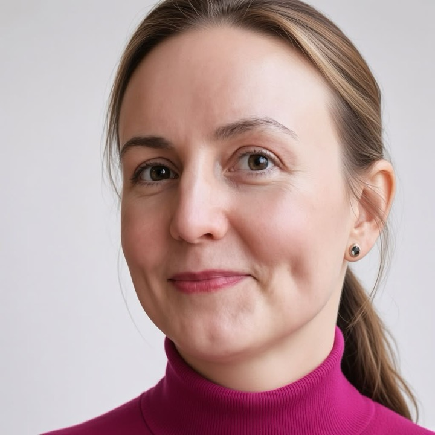

Helsinki · Finnish citizen
IT project manager. The bridge between business and engineering.
Delivery, change, and end-to-end client onboarding in regulated fintech. I make things happen against the odds while keeping the business objective at the centre.

- 75NPS — best of six countries
- €1.5Mproject budgets delivered
- 22FTE teams managed
About
The person who keeps developers and stakeholders talking.
My background sits on both sides of the table at once: IT delivery and commercial operations. I translate between developers and stakeholders without a third language in the middle, and keep a programme moving when the two start talking past each other.
Most of my recent work is fintech and debt management — end-to-end client onboarding, UAT, change on critical systems, and process documentation in regulated environments where the details are not optional.
Experience
Fifteen years of delivery, compounding.
-
IT Project Manager
Mar 2024 – present- Made communication between business and IT straightforward; minimised disruption while changing critical systems and services.
- Built a new balance-calculation system and a data warehouse so the business can reach data without a ticket queue.
- Cut the backlog by 60% in three months.
- CRM development, integrations, implementation, and UAT; decomposed work into detailed tasks for technical teams.
- Launched two new products in two countries in one year.
- Day-to-day team management, hiring developers, and conflict resolution.
- Stood up the company’s Confluence from scratch; wrote CRM technical documentation and facilitated business-logic docs.
-
IT Project Manager, Business Analyst
Jan 2020 – Oct 2022- Helped the business adopt a new way of working: clarified priorities, documented them, and established processes.
- Core collection-system development, integrations, implementation, and UAT; resource and budget planning and control.
- Launched a new core collection system for a new country through first GoLive in three months.
- Owned end-to-end client onboarding; documented the process by client type and tooling.
- Steering-committee packs, weekly reports, and closure reports; requirements for new features.
- Wrote guides and ran training so users could actually use the new software.
-
Junior Web Developer
Aug 2019 – Dec 2019- Proof of concept: rebuilt the site as a React single-page application.
- Architecture for the migration, implementation, and ongoing maintenance.
- JSX, React, Bootstrap, Redux, Axios, AJAX, Highcharts, Firebase, Thunk, CSS Modules, Jest, Enzyme.
-
Assistant Development Manager, Digital Services
Aug 2016 – May 2018- Launched corporate and business sites on Episerver; UX/UI design.
- Created and validated a social-media strategy for the Russian market and launched the channels.
- Took a Scaled Agile Framework course and sat on the change-management team adopting SAFe.
- Trained marketing specialists on Episerver, SharePoint, social communications, storytelling, and selling copy.
-
Project Coordinator
Jan 2011 – Dec 2015- Event and project management, fundraising, grant applications, and budgets.
- Recruited, coordinated, managed, and trained organisational volunteers.
- Business consulting for immigrant members; coaching on motivation, CVs, and project management.
-
Marketing & Communication Manager
Jan 2005 – Dec 2010- Marketing and communication, public affairs, social media, reputation management, and branding.
Skills & tools
What I bring to a delivery team.
Core
- Project management
- Budgeting & cost analysis
- Resource planning
- Change management
- UAT
- Process documentation
Methods
- Agile
- Scrum
- Kanban
- SAFe
Tools & technical
- Jira
- Confluence
- Monday
- MS Project
- Trello
- JavaScript
- Java
- React
- HTML/CSS
Languages
- English — fluent
- Finnish — intermediate
- Russian — native
- Ukrainian — basic
Education & certificates
Studied on both sides of the bridge.
Master’s — Professional Project Management
JAMK University of Applied Sciences · 2020 – present
Vocational qualification in ICT — Full-stack web developer
Business College Helsinki · 2019 – 2020
Marketing & Business Administration
Porvoo International College, Finland · 2011 – 2013
Diploma with highest honours — Marketing
MIRBIS Business School, Plekhanov Economic Academy · 2008
Master’s with highest honours — Philology
State Pedagogical University, Russia · 1998 – 2005
Professional courses
SAFe · Episerver · group facilitation · mental resilience · coaching (business, time, decision-making).
Volunteering with the Cherie Blair Foundation for Women, SAMHA, Sininauhasäätiö, and Luckan. Off the clock: Brazilian jiu-jitsu and screenwriting. References available on request.
Contact
Let’s talk about your next programme.
Based in Helsinki and open to the right delivery, programme, or PM role. The fastest way to reach me is email.
natalia.p.koroleva@gmail.com